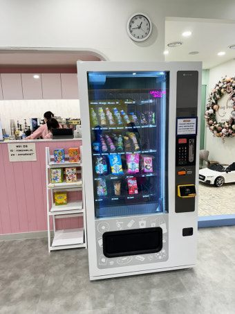

죽전 무인자판기 설치 완료 — 용인 수지 카페거리·주거 상권 무인 판매 구축

오늘은 용인 수지 죽전동, 카페거리와 아파트가 붙은 상가에 무인자판기를 설치하고 왔습니다. 주거·학원 수요가 겹치는 자리라 낮과 저녁 회전이 고른 곳입니다. 콘센트·수평·동선 세 가지를 확인하고 반나절 만에 마무리했습니다.
설치 위치 — 상가 1층 출입구 옆. 주거 상권은 보행 동선과 야간 조명이 매출을 좌우합니다. 사람이 실제 지나는 라인, 밤에도 밝은 자리를 우선으로 골랐습니다.
죽전에 설치한 자판기 구성
무인자판기에 음료자판기·커피자판기·스낵 자판기를 담고, 여름 수요를 위해 냉동자판기(아이스크림)와 학생 야식용 라면자판기를 더한 멀티자판기 구성입니다. 카드·삼성페이·카카오페이·네이버페이·QR 모두 받고, 매출·재고는 앱으로 원격 확인합니다.
죽전 무인자판기 장점과 단점
장점 — ① 주거·학원 상권이라 낮과 저녁 수요가 분산 ② 인건비 0원 소자본 무인사업 ③ 상가 자투리 공간 활용 ④ 현금 관리 불필요.
단점도 솔직히 — 주거 상권은 경쟁 매장·편의점이 가까우면 매출이 나뉩니다. 그래서 편의점과 겹치지 않는 품목(대용량 커피, 특화 음료)으로 차별화해야 합니다. 입지가 안 맞으면 먼저 말씀드립니다.
죽전 무인자판기 매출 전략
주거·학원 상권은 등하교·퇴근 시간 피크가 뚜렷합니다. 그 시간에 재고가 비지 않게 채우는 게 핵심입니다. ① 동선 위에 놓고 ② 시간대별 품목에 슬롯을 나눠주고 ③ 편의점과 다른 품목으로 차별화하면 회전이 올라갑니다.
죽전, 이런 곳에 무인자판기가 잘 됩니다
죽전·수지 일대는 호텔·모텔·사우나·찜질방, 애견셀프목욕 매장, 학교자판기(중·고등학교·학원가), 구청무인자판기(수지구청·주민센터), 분당선 죽전역 주변 지하철역자판기까지 문의가 많습니다. 역세권·학원가처럼 사람이 머무는 시간이 긴 자리일수록 회전이 빠릅니다.
죽전 무인키오스크·업종별 무인매장
무인키오스크 문의도 많습니다. 골프존·스크린골프장 무인 접수, 병원·의원 무인 수납, 무인정육점·무인마카롱·무인밀키트 매장 셀프주문까지, 좁은 매장용 미니키오스크부터 매장에 맞춰 구성합니다.
죽전 서비스 지역 (동 단위 방문)
죽전동, 풍덕천동, 신봉동, 성복동, 상현동, 동천동까지 죽전·수지 전역을 동 단위로 방문합니다.
죽전동 무인자판기 설치 · 풍덕천동 무인자판기 설치 · 신봉동 무인자판기 설치 · 성복동 무인자판기 설치 · 상현동 무인자판기 설치 · 동천동 무인자판기 설치
죽전 무인사업, 이렇게 시작하세요
설치비는 무료입니다. 입지·품목 분석부터 기계 반입, 카드 결제 연동, 재고 운영까지 한 번에 도와드립니다. 주거·학원 상권 자투리 공간으로 부수입을 만들고 싶으시면 편하게 연락 주세요.
함께 많이 찾는 키워드 — 죽전 음료자판기 · 죽전 커피자판기 · 죽전 냉동자판기 · 죽전 라면자판기 · 죽전 주류자판기 · 죽전 담파자판기 · 죽전 멀티자판기 · 죽전 무인사업 · 죽전 무인키오스크 · 죽전 미니키오스크 · 죽전 골프존 키오스크 · 죽전 병원 키오스크 · 죽전 무인정육점 · 죽전 무인마카롱 · 죽전 무인밀키트 · 죽전 학교자판기 · 죽전 구청무인자판기 · 죽전 무인자판기 렌탈 · 죽전 무인자판기 임대 · 죽전 무인자판기 설치 문의
📞 죽전 무인자판기 설치 상담 010-6832-1994